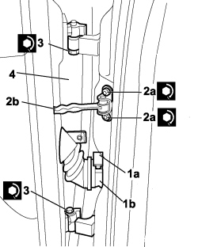

7210E38 R.R. REAR SIDE DOOR
- Path
- Procedures > 72 PANELS AND FRAMES > 7210 REMOVING-REFITTING > 7210E EXTERNAL PARTS > 7210E38 R.R. REAR SIDE DOOR
- Kind
- repair procedure (removal / refitting; the operation number is the code)
- Applies to
- all engines; all production periods
- Interactive page
- https://sloeber94.github.io/elrnDB-fCrm/en/#/194001247
Applies to: all engines; all production periods
 Removing
Removing
 Refitting
Refitting- Turn the ignition key to the OFF position.
- Open the bonnet.
- Disconnect the negative battery terminal.
Description | Connector | |
|---|---|---|
BATTERY |
1. Lift up the ring nut (1a) and disconnect the rear side door coupling (1b).
Description | Connector | |
|---|---|---|
1b | LEFT REAR DOOR COUPLING |
Description | Connector | |
|---|---|---|
1b | RIGHT REAR DOOR COUPLING |
2. Undo the bolts (2a) fixing the check strap (2b) to the pillar and close the door so that the check strap is inside.
3. Undo the bolts for the hinges.
4. Lift up the door and remove it.

Applies to: all engines; all production periods
Refitting
Removing- Place the door on the hinges.
- Tighten the bolts for the hinges.
Component | Fastening | dia | Value (daNm) | Validity |
|---|---|---|---|---|
WING TO LIGHT CLUSTER BASE MOUNTING BRACKET | Bolt | M8 | 6,4 ÷ 9,6 |
Component | Fastening | dia | Value (daNm) | Validity |
|---|---|---|---|---|
WING TO LIGHT CLUSTER BASE MOUNTING BRACKET | Bolt | M8 | 6,4 ÷ 9,6 |
- Connect the electrical connection.
Description | Connector | |
|---|---|---|
LEFT REAR DOOR COUPLING |
Description | Connector | |
|---|---|---|
RIGHT REAR DOOR COUPLING |
- Connect the negative battery terminal.
Description | Connector | |
|---|---|---|
BATTERY |
- Check that the various consumers on the door are working.
- Take out the check strap and tighten the bolts.
Component | Fastening | dia | Value (daNm) | Validity |
|---|---|---|---|---|
WING TO LIGHT CLUSTER BASE MOUNTING BRACKET | Bolt | M8 | 6,4 ÷ 9,6 |
- Check the alignment of the door and, if necessary, carry out the following operation.
- If the half hinges have been removed from the door or from the bodyshell, carry out the following operation.
Topics linked from this page (4)
- 7010A14 REAR SIDE DOOR - ADJUST CENTERING AND MOULDING - INCLUDES ADAPTATION OF HINGES AND SEALS ON DOOR COMPARTMENT
- A001 BATTERY
- D035 LEFT REAR DOOR COUPLING
- D036 RIGHT REAR DOOR COUPLING